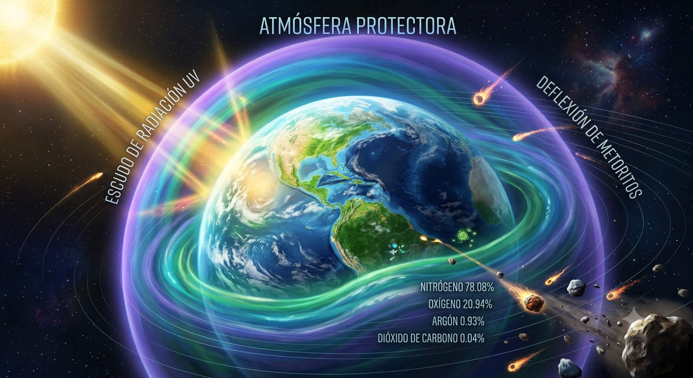
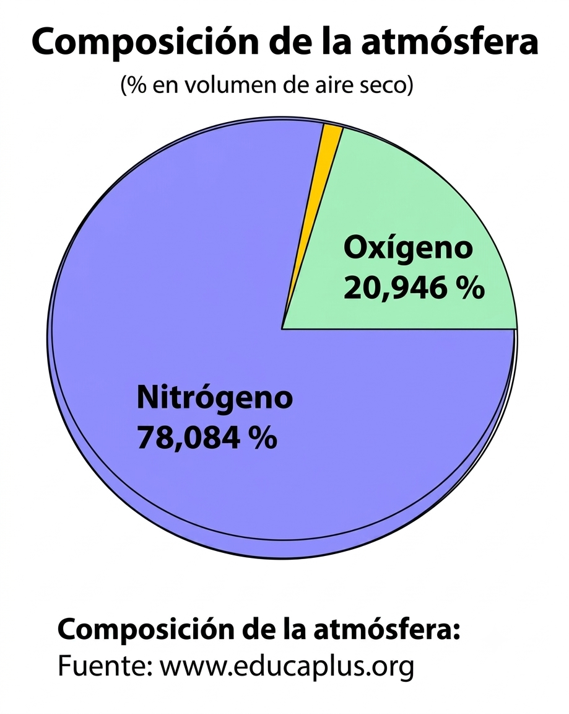
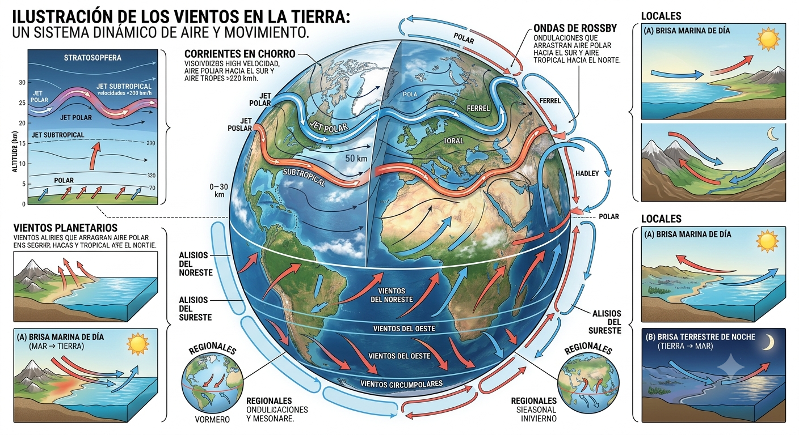
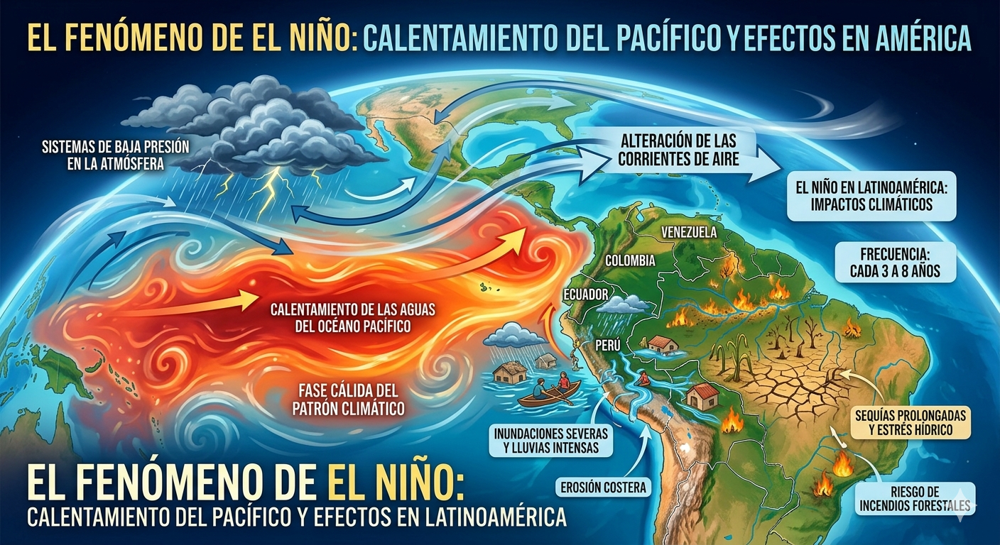
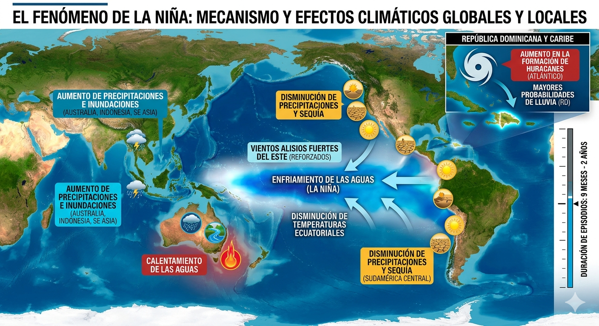
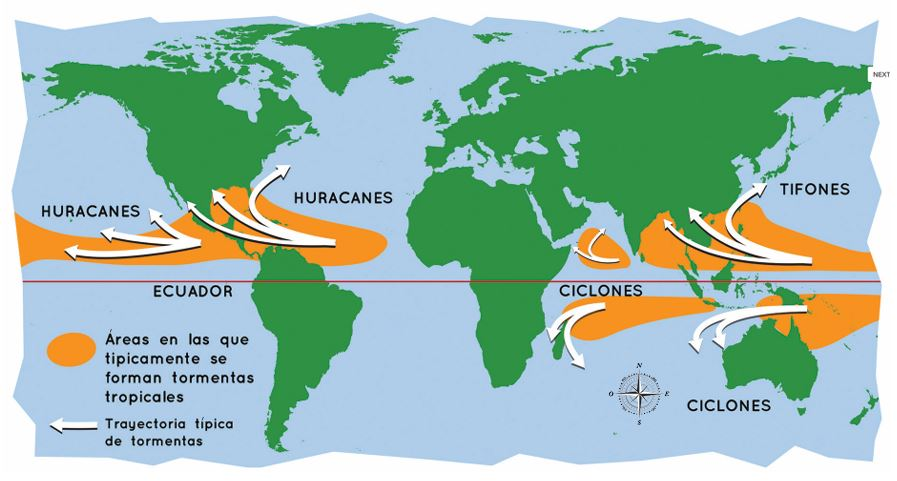
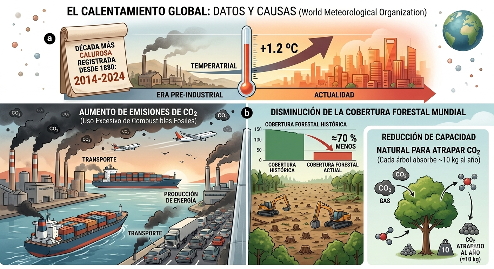
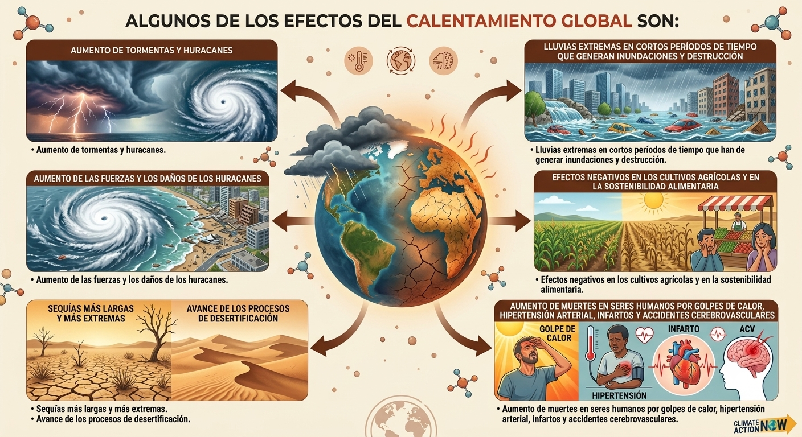
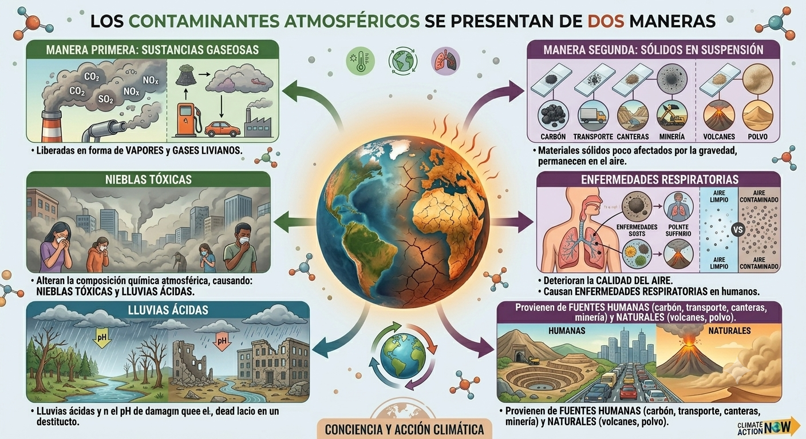

El aire es la mezcla invisible de gases que compone la atmósfera terrestre y que se mantiene unida al planeta por acción de la fuerza de gravedad. Resulta vital para la supervivencia, ya que provee el oxígeno necesario para la respiración y protege la vida filtrando la radiación solar.
Una atmósfera es una capa de gases que rodea un cuerpo celeste y se mantiene en su lugar gracias a la fuerza de la gravedad. Su composición química puede variar según el planeta y, en algunos casos, como en Saturno, puede ser muy densa y profunda.

La atmósfera de la Tierra está formada principalmente por nitrógeno (78,08 %), oxígeno (20,94 %), argón (0,93 %), dióxido de carbono (0,04 %) y agua (1–3 %). Esta mezcla de gases es esencial para la vida, ya que cumple funciones vitales:
■ Protege de la radiación ultravioleta del Sol.La atmósfera está formada por varios gases, principalmente nitrógeno, oxígeno, argón, vapor de agua y dióxido de carbono. En los primeros 80 a 100 km de altura, la mezcla de gases es igual en todas partes, por eso se llama homosfera. A partir de esa altura, los gases cambian su proporción y esa zona se conoce como heterosfera.

Entre las propiedades físicas de la atmósfera destacan:
Presión atmosférica: es el peso del aire sobre la superficie de la Tierra.
Es más fuerte cerca del suelo y disminuye conforme subimos.
Temperatura: cambia según la altura.
En la superficie es más alta y va bajando hasta unos 12 km.
Luego vuelve a subir hasta los 50 km.
Entre los 50 y 80 km vuelve a bajar.
A partir de allí, vuelve a subir hasta unos 600 km de altura.
Los vientos son corrientes de aire que recorren la superficie de la Tierra debido a causas naturales como la rotación y traslación del planeta, además de las diferencias de presión y temperatura.
En los niveles bajos de la atmósfera existen distintos tipos de vientos:
Vientos planetarios: se originan por la rotación de la Tierra,
recorren grandes extensiones y mantienen su dirección durante
gran parte del año. Transportan calor y humedad. Ejemplos:
■ Alisios del noreste (hemisferio norte).
■ Alisios del sureste (hemisferio sur).
■ Vientos del oeste (en ambos hemisferios).
■ Vientos circumpolares (cerca de los polos).
■ Vientos regionales: cambian de dirección e intensidad según la estación del
año o incluso la hora del día.
■ Vientos locales: afectan áreas pequeñas y dependen de
la geografía (océanos, lagos, montañas). Ejemplo: brisas marinas de día
y brisas terrestres de noche.

En las partes altas de la atmósfera, los vientos ya no sienten el rozamiento de
la superficie y soplan con mayor constancia, paralelos a las isobaras.
Allí se encuentran:
■ Ondas de Rossby: Corrientes de aire en forma de ondas que
arrastran aire tropical hacia el norte y aire polar hacia el sur.
■ Corrientes en chorro: Flujos de aire muy rápidos y
largos, con forma tubular y sinuosa, que marcan el contacto entre aire frío y
caliente, produciendo cambios bruscos de presión y temperatura.
El Niño es un fenómeno climático que se produce por el calentamiento
de las aguas del océano Pacífico en períodos que van de tres a ocho años.
Esto corresponde a una fase cálida del patrón climático del Pacífico ecua
torial generando sistemas de baja presión en la atmósfera.
Con El Niño disminuye el movimiento de las corrientes marinas frías
y se produce el calentamiento del agua en el océano, debido al debilita
miento de los vientos alisios. Entonces, producto del calentamiento del
agua del océano, esta zona que es seca, empieza a experimentar lluvias to
rrenciales en las costas americanas, producto de la evaporación del agua;
mientras que en la zona indoaustraliana se manifiesta con una época de
sequía en lugares que tienen de forma habitual lluvias torrenciales.

La Niña es un fenómeno climático que se relaciona con el enfriamiento de las aguas, debido a la existencia de un régimen de vientos alisios fuer tes desde el oeste, con la disminución de las temperaturas ecuatoriales. Al disminuir las temperaturas del mar, las aguas se vuelven más frías y por lo tanto en las costas americanas disminuyen las precipitaciones. Sin em bargo crea un efecto opuesto en Australia, Indonesia y el sureste de Asia, con el calentamiento de las aguas y un aumento de las precipitaciones. Los episodios de La Niña se establecen por períodos entre nueve meses y dos años. En la República Dominicana el fenómeno de La Niña está vinculado a mayores probabilidades de lluvia, así como a un aumento en la formación de huracanes en el océano Atlántico.

Los ciclones tropicales son sistemas tormentosos que reciben distintos nombres
según la región:
Huracán: en el Atlántico norte, el Caribe y el noreste del Pacífico.
El nombre proviene del dios caribeño del mal, Hurrican.
Tifón: en el Pacífico noroccidental. El término viene de la
mitología griega, donde Tifón era una divinidad aterradora.
Ciclón o tormenta tropical: en otras zonas, se usa como término general.
Una tormenta tropical es una perturbación climática que se forma sobre
aguas cálidas subtropicales o tropicales. Se caracteriza por:
■ Vientos en forma de torbellino con velocidades de 63 a 118 km/h.
■ Lluvias intensas que acompañan el fenómeno.
Un huracán es un fenómeno de la atmósfera baja que surge de la acumulación de
tormentas eléctricas sobre aguas oceánicas cálidas. Sus características principales son:
■ Forma de remolino en embudo.
■ Diámetro de hasta 1000 km y altura de unos 10 km.
■ Vientos que superan los 200 km/h, acompañados de lluvias torrenciales.

Cuando un huracán alcanza la categoría 3 en la escala Saffir-Simpson,
se le denomina huracán mayor. Estos presentan:
■ Vientos máximos sostenidos superiores a 178 km/h.
■ Intensidad extrema, con ráfagas que corresponden a categorías 3, 4 o 5.
■ En el océano Atlántico, los huracanes se forman entre mayo y diciembre,
siendo más frecuentes entre agosto y octubre, con un pico en septiembre.
Según la Organización Meteorológica Mundial desde el año
2014 vivimos la década más calurosa registrada desde 1880, con una temperatura
media que supera en 1.2 ºC la existente antes de la era industrial.
El calentamiento global se debe principalmente a dos factores:
■ Aumento de emisiones de dióxido de carbono (CO₂) por el uso excesivo de
combustibles fósiles en transporte y producción de energía.
■ Disminución de la cobertura forestal mundial (≈70 % menos),
lo que reduce la capacidad natural de los árboles para atrapar CO₂
(cada árbol absorbe unos 10 kg de CO₂ al año).

El cambio climático parte del conocimiento del aumento
de la temperatura en la Tierra. Una consecuencia del
efecto invernadero, tanto los vientos como las corrientes
marinas que mueven el calor alrededor del planeta, producen
que cambien los patrones del clima y zonas que eran
lluviosas se vuelven desérticas, otras zonas reciben más lluvias
y cambia la cantidad de lluvia y nieve que cae.
El cambio en el clima no es nuevo, algunas causas
naturales como las variaciones en la actividad solar o las
erupciones volcánicas han generado esos cambios. Pero en la
actualidad es la actividad humana ligada a la quema de
combustibles fósiles la que ha producido recientemente los
cambios en el clima. Tanto las actividades industriales, el desmonte de
tierras y bosques, la agricultura, la ganadería, entre otras, son actividades
que se vinculan a una mayor emisión de gases de efecto invernadero.
Algunos de los efectos del
calentamiento global son:
• Aumento de tormentas y hura
canes.
• Aumento de las fuerzas y los da
ños de los huracanes.
• Sequías más largas y más extre
mas.
• Avance de los procesos de de
sertificación.
• Lluvias extremas en cortos pe
ríodos de tiempo que han de
generar inundaciones y des
trucciones.
• Efectos negativos en los culti
vos agrícolas y en la sostenibili
dad alimentaria.
• Aumento de muertes en seres
humanos por golpes de calor,
hipertensión arterial, infartos y
accidentes cerebrovasculares.

Existen sustancias en la atmósfera terrestre que al sobrepasar ciertas
concentraciones, pueden alterar las características naturales de la misma.
A estos se les conoce como contaminantes atmosféricos y son
producidos en su mayoría por las actividades humanas.
Los contaminantes atmosféricos se presentan de dos maneras. La
primera son sustancias gaseosas liberadas a la atmósfera en forma de
vapores y gases livianos provenientes de la combustión de materia
orgánica fósil (gasolina, petróleo, carbón). Estos gases son responsables de alterar
la composición química de la atmósfera, generando así efectos no de
seados, tales como nieblas tóxicas y lluvias ácidas. La segunda forma de
contaminación atmosférica son los sólidos en suspensión o materiales
sólidos poco afectados por la gravedad. Estos permanecen en el aire,
deteriorando su calidad y dando origen a enfermedades respiratorias en
el ser humano. Estas provienen tanto de la actividad humana
(combustiones de carbón y medios de transporte, canteras, minería), como del
medio natural (actividad volcánica, polvo).

En la República Dominicana, cada año, entre el 15 de mayo y el 15 de diciembre se desarrolla lo que es la temporada ciclónica, que nos advierte de la llegada de fenómenos atmósfericos al país. Durante este período se difunden informaciones en forma de boletines que primero dan la advertencia, avisando sobre la formación de ciclones tropicales; la alerta meteorológica temprana que indica que podría acercarse a nuestra área en un plazo de 72 horas o menos; la alerta, que indica que afectará alguna parte del país en 48 horas o menos y finalmente el aviso que indica un peligro inminente en un plazo de 36 horas o menos, por lo cual deben haberse hecho los planes o prepa rativos de lugar para evitar pérdidas humanas y materiales.
■ Investiga cuáles medidas de preparación de ben tomarse en los hogares ante la llegada in minente de un ciclón.